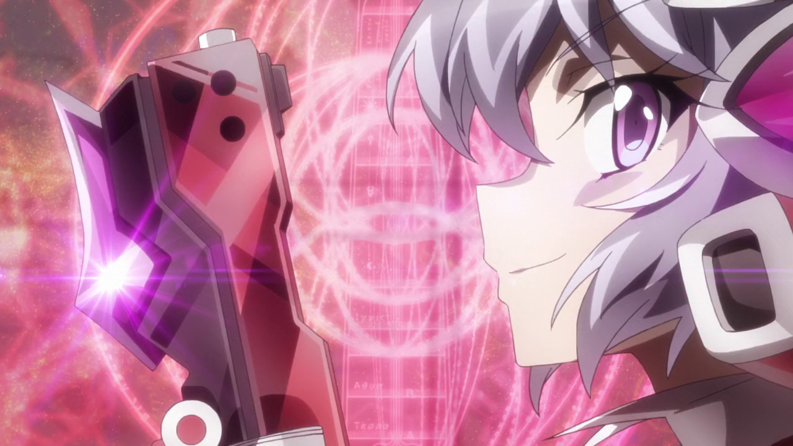

SG-r02'
Ichival
Chris Yukine
Como resultado de su dura vida, Chris es impulsiva, antagónica y agresiva. Inicialmente era una antagonista que trabajaba con el villano principal, Finé , empuñando la armadura Nehushtan robada del concierto Zwei Wing dos años antes de S1. Durante S1, Chris cambia de bando y se une a los protagonistas para trabajar contra Finé. Pese a lo anterior se ha vuelto mucho más amable, abierta y honesta consigo misma y con los demás. A pesar de su temperamento y su aparente impulsividad, Chris es realmente hábil para improvisar en el acto y tomar decisiones, planes y tácticas inteligentes con pensamiento rápido, actuando en lugar de dudar en situaciones desesperadas. Tiene un estilo de pelea de largo alcance y gran manejo de armas de fuego. Su estilo musical es Heavy Rock